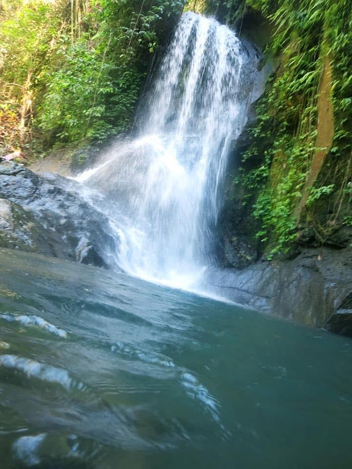
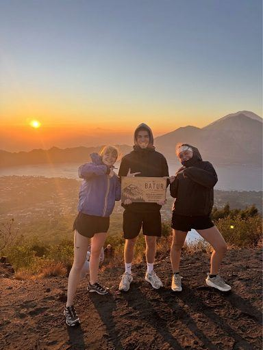
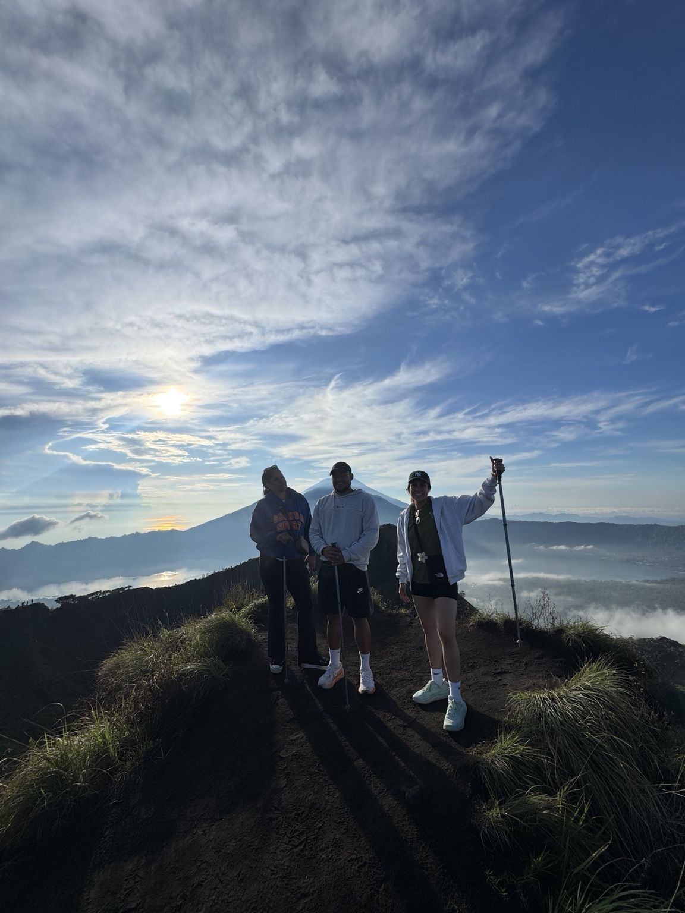
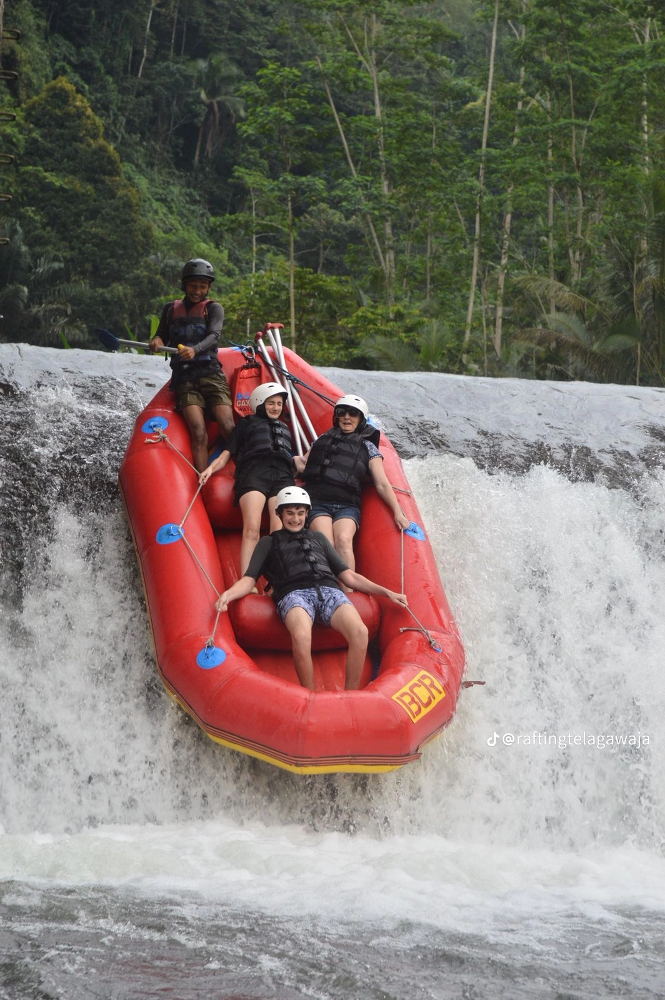

Local Knowledge
Jelajahi area Kintamani dan Bangli bersama pemandu lokal yang mengenal kawasan, membantu perjalanan tetap lancar, dan menunjukkan sudut-sudut alam yang menarik.
KEUNGGULAN LAYANAN
Enjoy a flexible, private day exploring Bali’s waterfalls. Choose up to three destinations that interest you most, then travel at a comfortable pace with private transport and helpful local service.
Jelajahi area Kintamani dan Bangli bersama pemandu lokal yang mengenal kawasan, membantu perjalanan tetap lancar, dan menunjukkan sudut-sudut alam yang menarik.
Kendaraan dan pemandu lokal disediakan khusus untuk Anda dan rombongan agar perjalanan menjelajahi air terjun terasa lebih nyaman dan fleksibel.
Seluruh tarif dihitung transparan via Kalkulator Harga. Tidak ada biaya tersembunyi (hidden fees) atau paksaan belanja saat perjalanan.
PENGALAMAN TERBAIK DI BALI
Choose up to three waterfalls from seven destinations, each offering its own atmosphere—from jungle cascades and natural pools to dramatic rock formations and flowing rivers. Your private expedition also includes two complimentary stopovers: the iconic Tegallalang Rice Terrace and a local coffee plantation near Tegenungan.
Select up to three of seven waterfall destinations, each with its own natural character and scenery.
Nikmati suasana alam tropis dan, jika kondisi aman serta diizinkan, waktu untuk menyegarkan diri di kolam alami.
Didampingi oleh guide warga lokal Kintamani yang ramah, siap membawakan perlengkapan, dan membantu mengambil foto terbaik.


Private full-day expedition
Private Car
Jalur alam & tangga
Choose up to 3 waterfalls + 2 free stopovers
Build your own waterfall itinerary by selecting up to three destinations. Next, choose your activity date, group size, and pick-up area, then enter your contact details. Private AC transport, a local driver, and two complimentary scenic stopovers are included.
Choose 1 to 3 waterfalls from the seven available destinations. You can select no more than three; once your third choice is selected, the other options will be locked. Your selected waterfalls do not change the package rate—the price is based on the number of guests.
Pilih minimal 1 dan maksimal 3 air terjun untuk melanjutkan.
Choose your activity date, number of guests (maximum 5), and hotel pick-up area.
Enter the main booking contact so we can confirm your reservation.
Your package includes private AC transport, a local driver, and complimentary stops at Tegallalang Rice Terrace and a coffee plantation near Tegenungan. Meals, personal purchases, tastings, and any separately charged entrance fees are not included.
Your driver will meet you at your hotel or villa. Settle into your private air-conditioned vehicle and begin your full-day Bali waterfall journey.
Begin your day at the first waterfall you selected. Enjoy the natural scenery, take photos, and explore the area at a relaxed pace.
Continue to the second waterfall on your list and enjoy its own unique landscape and atmosphere.
Enjoy a scenic stop at Tegallalang Rice Terrace. Take photos of the layered green landscape and appreciate the traditional Balinese countryside. This stop is included in the tour at no additional package charge; any site entrance or personal purchases, if applicable, are at your own expense.
Take a relaxing lunch break before continuing your journey. Lunch and personal orders are at your own expense unless confirmed as included in your booking.
Visit the last waterfall on your list. Take time for photos and explore the area before the final stop of the day.
Finish the sightseeing route with a visit to a local coffee plantation near Tegenungan. Discover Bali’s coffee and herbal products and enjoy the plantation atmosphere. The stop is included in the tour at no additional package charge; tastings, purchases, or other personal expenses are not included unless stated.
After the coffee plantation visit, meet your driver for the return journey to your hotel or villa. Your full-day waterfall and scenic countryside experience comes to an end.
CLEAR & TRANSPARENT SERVICE
Review what is included in your waterfall expedition and any personal expenses before your trip.
This is a full-day private tour. The planned itinerary starts with hotel pick-up at 07:30 and returns at approximately 17:30. Actual timing may vary depending on your hotel location, traffic, and conditions at each destination.
Some waterfall routes include stairs, uneven paths, and slippery areas. Guests should be comfortable walking outdoors and follow the guide’s safety advice. Suitability depends on the selected stops and current conditions.
Yes. Private AC hotel pickup and drop-off are included in the package price. Choose your accommodation area in the calculator so our team can coordinate the pickup. There is no separate transport charge in the calculator.
Pick-up time depends on your location. Our team will confirm the schedule and share the driver’s contact details via WhatsApp before the activity.
Yes. Private AC transport and a local guide are included in the displayed package price. Any optional extras or entry fees not listed as included should be confirmed with our team before booking.
Bring shoes with good grip, a change of clothes and towel if you plan to swim, sunscreen, insect repellent, a small bag, and personal medication if needed.
Swimming depends on the waterfall, water conditions, access rules, and local safety guidance. Only swim where it is permitted and considered safe by your guide.
Choose the number of participants and activity date in the calculator, then continue to the booking form. Submit your details to contact AWAN TREKKING via WhatsApp and confirm the arrangements.
Cash payment is commonly used. Please confirm the payment arrangement with our team when your booking is discussed.
Safety comes first. Heavy rain, strong water flow, or restricted access may affect waterfall visits. Your guide may change the route or skip a stop if conditions are unsafe.
Make your Bali adventure even more memorable. Explore our other experiences and contact our team for package details and availability.

Best SellerExperience a magical sunrise from the summit of Mount Batur with our local guide.
 Jeep Sunrise
Jeep SunriseEnjoy Mount Batur sunrise from a 4x4 Jeep, with options for scenic volcanic stops.

Daytime TrekkingExplore Mount Batur in daylight with volcanic scenery and a local trekking guide.
 Jeep Day Trip
Jeep Day TripDiscover Mount Batur’s volcanic landscape on a scenic 4WD Jeep adventure.
 Sunset Trekking
Sunset TrekkingEnjoy golden-hour views and a memorable Mount Batur sunset trek with a local guide.
 Sunset Jeep Tour
Sunset Jeep TourTake in Mount Batur’s sunset scenery by Jeep with a choice of volcanic routes.

WHITE WATER RAFTINGEnjoy an exciting river rafting adventure surrounded by Bali’s tropical scenery.
 QUAD BIKE ATV
QUAD BIKE ATVRide through jungle tracks, muddy trails and exciting off-road scenery on an ATV.
 ATV + RAFTING
ATV + RAFTINGCombine an off-road ATV ride with an exciting Ayung River rafting experience.
 SUNRISE TREKKING
SUNRISE TREKKINGChallenge yourself with a Mount Agung sunrise trek and sweeping mountain views.
 JUNGLE TREKKING
JUNGLE TREKKINGExplore Mount Abang’s peaceful forest trails and enjoy beautiful highland scenery.
 SUNRISE TREKKING
SUNRISE TREKKINGDiscover Trunyan Hill at sunrise for a quieter trek and panoramic views of the Batur caldera.
YOUR EXPERIENCE MATTERS
Share your experience with AWAN TREKKING and help future adventurers plan their journey.
There are no guest reviews here yet. If you have joined one of our tours, you can share your feedback using the button below.
Reviews submitted here are saved in this browser on this device. They are not automatically sent to AWAN TREKKING or shared with other visitors.
Pilih layanan ini untuk penjemputan langsung dari hotel atau vila dengan mobil AC privat, lalu perjalanan menuju area air terjun yang dipilih.
Transportasi sudah termasuk dalam harga paket. Nama hotel dan alamat penjemputan diminta saat mengisi formulir pemesanan.
Detail penjemputan akan dikonfirmasi melalui WhatsApp sehari sebelum aktivitas.
Choose Hotel Pick-UpNote: Private AC hotel pickup and drop-off are included in the package price. Please provide your hotel or villa name and address when booking so our team can coordinate the pickup.
Choose up to three of Bali’s beautiful waterfalls and enjoy two complimentary scenic stopovers along the way. Travel privately with AC transport and a local driver, then check your package price based on group size.
Our AWAN TREKKING team can help with waterfall route details, included hotel pickup, group bookings, and customized tour requests. Contact us and we’ll help you plan your trip.
Halaman khusus pemesanan. Periksa ringkasan pilihan Anda, lalu lengkapi data diri untuk menyiapkan pesanan.